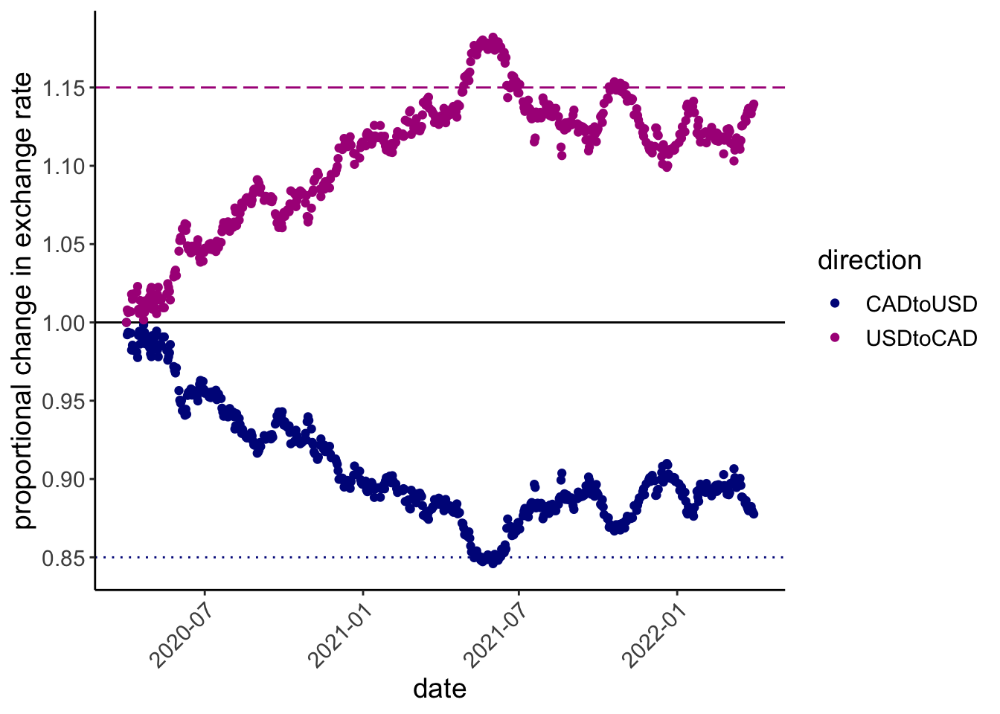
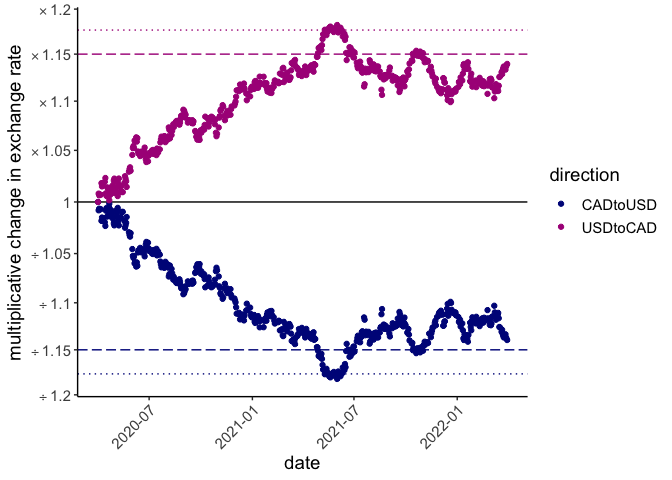

Logarithmic axis scales can clearly communicate multiplicative changes; they can also confuse. ratioScales annotates logarithmic axis scales with tickmarks that denote proportional and multiplicative change simply and explicitly.
The main function in this package, scale_*_ratio(), is ggplot-friendly and works similarly to existingscale_*_* functions from ggplot2 and scales.
Installation
You can install the development version of ratioScales from GitHub with:
# install.packages("devtools")
devtools::install_github("mikeroswell/ratioScales")Example
Consider exchange rates between US and Canadian dollars:
exch %>%
ggplot(aes(date, exRate, color = direction)) +
geom_point() +
scale_color_manual(values = hcl.colors(4, "Plasma")[c(1,2)]) +
labs(y = "exchange rate") this was the caption
#> [1] "Figure 1: Exchange rates between US and Canada during the COVID-19 Pandemic"Let’s see, relative to some baseline (1 April 2020), is the Canadian dollar gaining or losing ground against the US dollar, and by how much?
exch %>% ggplot(aes(date, exRate_scale, color = direction)) +
geom_hline(yintercept = 1, color = "black")+
geom_point() +
scale_color_manual(values = hcl.colors(4, "Plasma")[c(1,2)]) +
geom_hline(yintercept = 0.85
, color = hcl.colors(4, "Plasma")[1], linetype = 3) +
geom_hline(yintercept = 1.15
, color = hcl.colors(4, "Plasma")[2], linetype = 5) +
# FUNCTION FROM ggplot2
scale_y_continuous(breaks = seq(80, 130, 5)/100) +
labs(y = "proportional change in exchange rate") 
But this is strange! Somehow the Canadian dollar weakend by a maximum of 15% before rebounding, but the US dollar strengthened by much more than 15%. Maybe not the best way to think about this?
ratioScales provides “rational” alternatives.
divMult scale
The “divMult” scale in ratioScales shows absolute ratios, prefaced by an operator sign (e.g., × or ÷), allowing easy and accurate comparison of multiplicative changes.
exch %>% ggplot(aes(date, exRate_scale, color = direction)) +
geom_hline(yintercept = 1, color = "black")+
# times and divided by 1.15; longdash
geom_hline(yintercept = 1/1.15
, color = hcl.colors(4, "Plasma")[1]
, linetype = 5) +
geom_hline(yintercept = 1.15
, color = hcl.colors(4, "Plasma")[2]
, linetype = 5) +
# times and divided by 0.85; dotted
geom_hline(yintercept = 1/0.85
, color = hcl.colors(4, "Plasma")[2]
, linetype = 3) +
geom_hline(yintercept = 0.85
, color = hcl.colors(4, "Plasma")[1]
, linetype = 3) +
geom_point() +
scale_color_manual(values = hcl.colors(4, "Plasma")[c(1,2)]) +
# FUNCTION FROM ratioScales
scale_y_ratio(tickVal = "divMult", n = 12, nmin = 12, slashStar = FALSE) +
labs(y = "multiplicative change in exchange rate") 
percDiff
Prefer percentage differences? You can do this in a principled fashion using scale_y_ratio(tickVal = "percDiff").
exch %>% ggplot(aes(date, exRate_scale, color = direction)) +
geom_hline(yintercept = 1, color = "black")+
# times and divided by 1.15; longdash
geom_hline(yintercept = 1/1.15
, color = hcl.colors(4, "Plasma")[1]
, linetype = 5) +
geom_hline(yintercept = 1.15
, color = hcl.colors(4, "Plasma")[2]
, linetype = 5) +
# times and divided by 0.85; dotted
geom_hline(yintercept = 1/0.85
, color = hcl.colors(4, "Plasma")[2]
, linetype = 3) +
geom_hline(yintercept = 0.85
, color = hcl.colors(4, "Plasma")[1]
, linetype = 3) +
geom_point() +
scale_color_manual(values = hcl.colors(4, "Plasma")[c(1,2)]) +
# FUNCTION FROM ratioScales
scale_y_ratio(tickVal = "percDiff") +
labs(y = "percentage difference in exchange rate") 
[caption: explain the four lines (maybe we’ve very briefly explained two of the lines in an earlier caption]
This preserves the true ratio-based differences on the visual plot, but the values on the guide do not correspond simply to ratio differences (and are not symmetric, see plot).